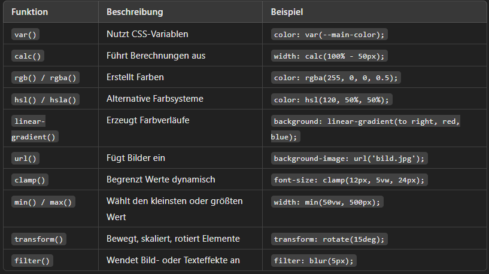

Lernerfolgsbuch
Montag 03.03.25 - 08.03.25
In CSS ist ein Transform-Attribut eine Eigenschaft, die verwendet wird, um Elemente im 2D- oder 3D-Raum zu verändern. Das geschieht mit der transform-Eigenschaft, die verschiedene Funktionen zur Manipulation von Elementen unterstützt.
Mit der translate Funktion werden Elemente um eine bestimmte Distanz verschoben.
Dreht ein Element um einen bestimmten Wert.
scaliert die grösse eines Elements horizontal und Vertikal
Verzert ein Element entlang der Achsen
Kombiniert mehrere Transformaationen in einer einzigen Matrix
Setzt diese Eigenschft auf ihren Srandardwert
Erbt die Eigenschaft vom Elternelement
Die CSS-transition-Eigenschaft ermöglicht sanfte Animationen zwischen zwei Zuständen eines Elements, z. B. beim Hover, Klick oder durch andere Änderungen.
property → Welche Eigenschaft soll animiert werden? (z. B. background-color, width, transform usw.)
duration → Wie lange soll die Animation dauern? (z. B. 0.5s, 1s, 200ms)
timing-function → Geschwindigkeit der Animation (ease, linear, ease-in, ease-out, ease-in-out, cubic-bezier())
delay → Wartezeit, bevor die Animation startet (0s, 1s)
Die transition-Eigenschaft in CSS kann auf viele, aber nicht alle CSS-Eigenschaften
angewendet werden. Im Allgemeinen funktioniert sie nur für numerische oder farbbezogene Werte
(z. B. width, opacity, background-color).


Die Timing-Funktion (transition-timing-function) in CSS bestimmt, wie die Animation über die Zeit abläuft.
Sie beeinflusst die Geschwindigkeit der Animation und gibt an, ob sie gleichmäßig, verzögert oder beschleunigt starten oder enden soll.

CSS-Animationen ermöglichen es, Elemente schrittweise von einem Stil in einen anderen zu überführen.
Um eine CSS-Animation zu erstellen, definiert man zunächst Keyframes, die die verschiedenen Zustände
des Elements zu bestimmten Zeitpunkten festlegen. Anschließend wird die Animation mit Hilfe der
animation-Eigenschaft an das gewünschte Element gebunden.
Innerhalb der @keyframes-Regel werden die unterschiedlichen Stilzustände eines Elements zu definierten
Zeitpunkten festgelegt. Zum Beispiel kann eine Animation erstellt werden, die die Hintergrundfarbe eines
< div >-Elements über 4 Sekunden von "red" zu "yellow" verändert:

Die animation-Eigenschaft ist eine Kurzform, die mehrere Animations-Eigenschaften zusammenfasst:
animation-name: Name der @keyframes-Animation
animation-duration: Dauer eines Animationszyklus
animation-timing-function: Geschwindigkeitskurve der Animation
animation-delay: Verzögerung vor dem Start der Animation
animation-iteration-count: Anzahl der Wiederholungen der Animation
animation-direction: Richtung, in der die Animation abgespielt wird
animation-fill-mode: Stil des Elements vor Beginn und nach Ende der Animation
animation-play-state: Spielstatus der Animation (laufend oder pausiert)
Diese Eigenschaft definiert die Geschwindigkeitskurve der Animation, also wie die Geschwindigkeit während der Dauer der
Animation variiert. Es gibt vordefinierte Werte wie ease, linear, ease-in, ease-out und ease-in-out. Alternativ kann
eine benutzerdefinierte Geschwindigkeitskurve mit der cubic-bezier(n,n,n,n)-Funktion erstellt werden.
Mit dieser Eigenschaft wird festgelegt, ob eine Animation läuft oder pausiert ist. Dies ist besonders nützlich, um Animationen
mittels JavaScript zu steuern, beispielsweise um sie in der Mitte eines Zyklus zu pausieren.
Diese Eigenschaft bestimmt, wie oft eine Animation abgespielt wird. Der Standardwert ist 1, aber durch Setzen auf infinite wird die
Animation unendlich oft wiederholt.
Diese Eigenschaft legt fest, welche Stile ein Element vor Beginn und nach Ende der Animation annimmt. Standardmäßig beeinflussen
CSS-Animationen ein Element nur während ihrer Laufzeit. Mit animation-fill-mode kann dieses Verhalten überschrieben werden, sodass
das Element die definierten Stile auch davor oder danach beibehält.
Mit dieser Eigenschaft wird definiert, ob eine Animation vorwärts, rückwärts oder in alternierenden Zyklen abgespielt wird.
Der Standardwert ist normal (vorwärts), aber durch Setzen auf alternate wechselt die Animation nach jeder Iteration die Richtung.
Durch das Verständnis und die Anwendung dieser Eigenschaften können Entwickler komplexe und ansprechende Animationen erstellen, die das
Benutzererlebnis auf Webseiten verbessern.
Größenangaben in CSS können entweder absolut oder relativ sein. Die Wahl der richtigen Einheit hängt davon ab, ob das Element eine
feste oder flexible Größe haben soll.


CSS-Variablen (auch als Custom Properties bezeichnet) sind benutzerdefinierte Werte, die in CSS definiert und wiederverwendet werden können.
Sie beginnen mit zwei Bindestrichen (--) und werden mit var() aufgerufen.
Eine CSS-Variable wird innerhalb eines Selektors (oft :root für globale Variablen) deklariert


Ein großer Vorteil von CSS-Variablen ist, dass sie zur Laufzeit geändert werden können
Responsive Design bedeutet, dass eine Website oder Anwendung so gestaltet ist, dass sie sich automatisch an verschiedene Bildschirmgrößen und Gerätetypen
(Smartphones, Tablets, Laptops, Desktops) anpasst. Das Ziel ist eine optimale Benutzererfahrung auf allen Geräten, ohne dass der Benutzer zoomen oder
horizontal scrollen muss.

Der "Mobile-First Approach" bedeutet, dass eine Website oder Webanwendung zuerst für mobile Geräte (kleine Bildschirme) entworfen und entwickelt wird, bevor sie
für größere Bildschirme wie Tablets und Desktops optimiert wird.
Der Viewport ist der sichtbare Bereich einer Webseite auf einem Gerät (z. B. Smartphone, Tablet, Laptop oder Desktop).
Auf mobilen Geräten ist der Viewport oft kleiner als auf einem Desktop.
Ohne Anpassung würde eine Webseite auf einem Smartphone zu groß dargestellt werden, sodass Nutzer zoomen oder horizontal scrollen müssten.
Ein Media Query ist eine CSS-Technik, die es ermöglicht, unterschiedliche Styles für verschiedene Bildschirmgrößen, Gerätetypen oder Auflösungen zu definieren.
Media Queries helfen dabei, responsive Webseiten zu erstellen, die sich automatisch an Smartphones, Tablets, Laptops oder große Bildschirme anpassen.